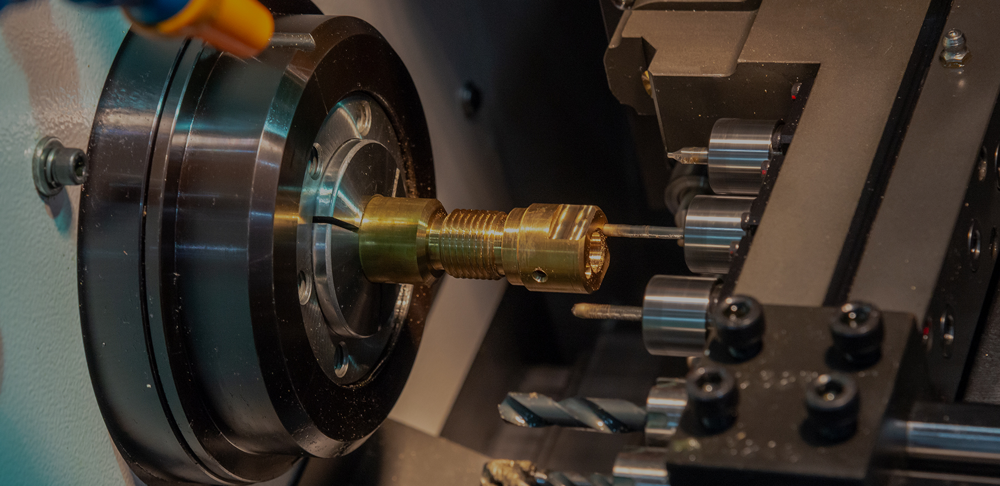

專業的顧問式服務


東芫 創立于1982年，東芫為全國專業配管材料供應商之一，本公司的服務領域涵蓋公共工程、商業、住宅大樓、科技廠辦、商場百貨、各級學校、大型醫院、國際級飯店等，更包含公共工程管線設備30年以上的銷售與專業配管服務，以高品質的產品與合理的價格，回饋客戶，歡迎舊雨新知給予支持與採用。
本公司秉持著品質專業誠信的服務態度為廣大的客戶作最完善的服務，並期待各界的指教與批評另專業從事過濾器生産、開發和銷售，并以 EAST SOURCE 爲注冊商标。研發自動清洗過濾器、單桶過濾器、雙桶過濾器，籃式過濾器，並已獲得台灣專利與中國專利。
經由團隊研發的演算法，開發出智慧助理解決方案、數據決策輔助工具，以及產業趨勢預測機制
經由團隊研發的演算法，開發出智慧助理解決方案、數據決策輔助工具，以及產業趨勢預測機制
經由團隊研發的演算法，開發出智慧助理解決方案、數據決策輔助工具，以及產業趨勢預測機制
經由團隊研發的演算法，開發出智慧助理解決方案、數據決策輔助工具，以及產業趨勢預測機制
TEL: 03-3791111
FAX: 03-360644
Email: tyeastsource@gmail.com
桃園市桃園區文中二路55號